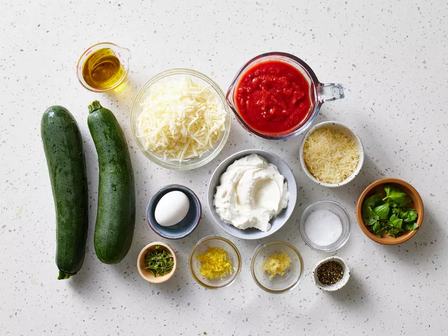
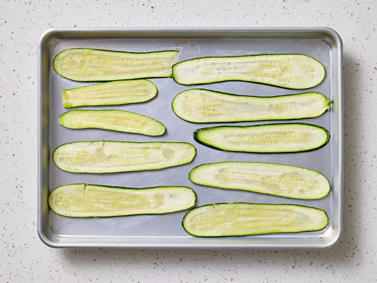
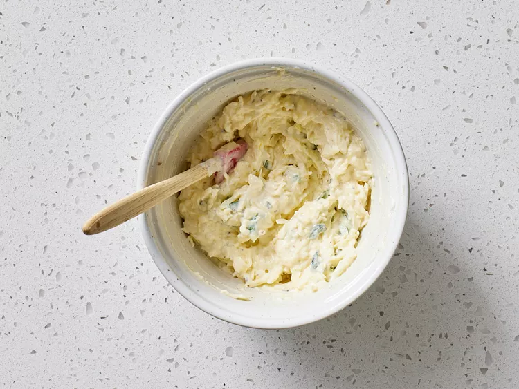
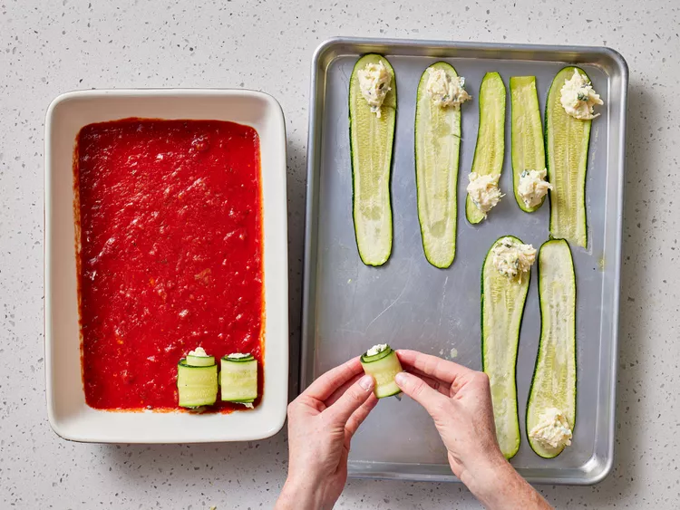
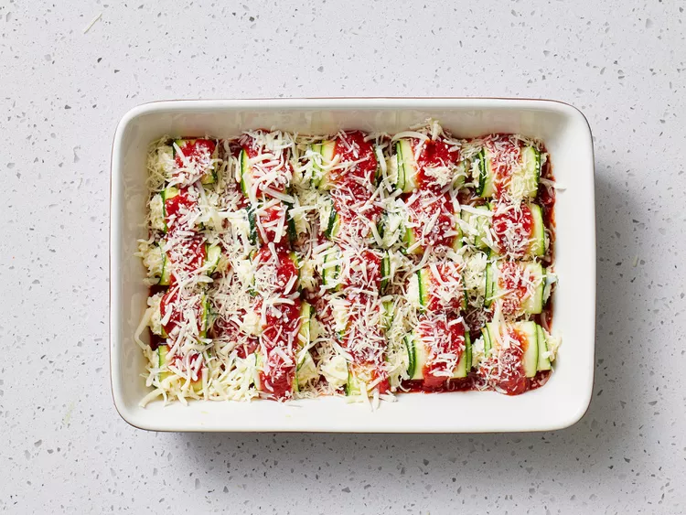
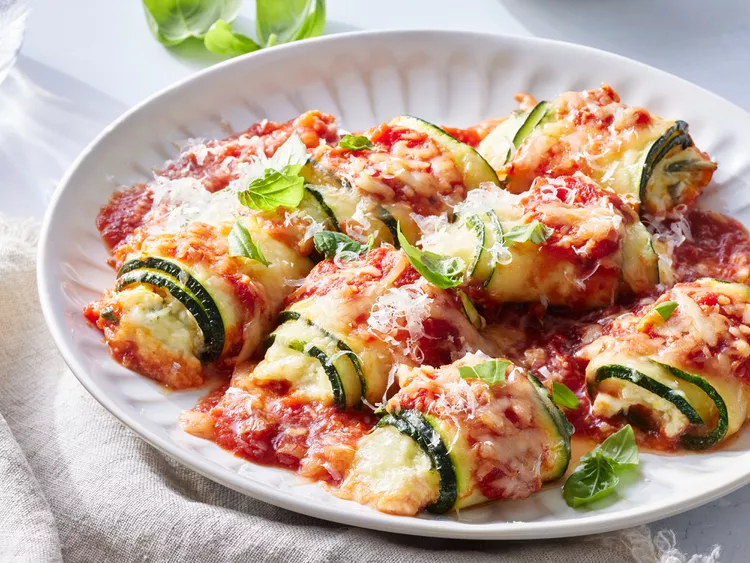

Zucchini Rollatini
Back to HomeThese zucchini rollatini are ribbons of zucchini, filled with ricotta, mozzarella, and herbs, and baked in marinara sauce, a bit like lasagna roll-ups, but without the pasta.

Ingredients
- 2 (12 ounce) zucchinis, sliced lengthwise into 18 (1/8-inch-thick) plank
- 2 tablespoons extra-virgin olive oil
- 1 tablespoon kosher salt, divided
- 1 cup whole milk ricotta cheese, patted dry
- 1 large egg, lightly beaten
- 3 tablespoons chopped fresh basil, plus more for garnish
- 2 teaspoons chopped fresh oregano
- 2 teaspoons grated lemon zest
- 1 teaspoon freshly ground black pepper
- 2 clove garlic, grated
- 1 1/2 cups shredded whole milk mozzarella cheese, divided
- 1/2 cup freshly grated Parmesan cheese, divided
- cooking spray
- 2 cups jarred marinara sauce (such as Rao's®), divided
Directions
-
Step 1
Gather all ingredients. Preheat the oven to 425 degrees F (220 degrees C) with racks in top third and lower third positions.

-
Step 2
Toss zucchini slices with oil and 2 teaspoons salt on 2 large rimmed baking sheets; arrange in a single layer. Bake in the preheated oven until tender, about 10 minutes, rotating baking sheets from top to bottom halfway through cook time.

-
Step 3
Remove from the oven, and let zucchini slices cool slightly, about 5 minutes. Reduce oven temperature to 375 degrees F (190 degrees C).
-
Step 4
Meanwhile, stir together ricotta, egg, basil, oregano, lemon zest, pepper, garlic, 1 cup of the mozzarella, 1/4 cup of the Parmesan, and remaining 1 teaspoon salt in a medium bowl until combined

-
Step 5
Lightly coat a 13x9-inch baking dish with cooking spray. Spread 1 cup marinara sauce evenly in the bottom of the baking dish. Gently pat zucchini slices dry with paper towels. Spoon about 1 tablespoon plus 1 teaspoon ricotta mixture on 1 end of 1 zucchini slice; roll up, and place roll, seam-side down, into the marinara in the dish. Repeat process with remaining zucchini slices and ricotta mixture.

-
Step 6
Pour remaining 1 cup marinara evenly over center of zucchini rolls, leaving roll ends exposed. Sprinkle rolls evenly with remaining 1/2 cup mozzarella and 1/4 cup Parmesan.

-
Step 7
Bake in the preheated oven until bubbling, slightly browned, and zucchini is very tender, about 25 minutes. Let rest 10 minutes. Garnish with basil.
